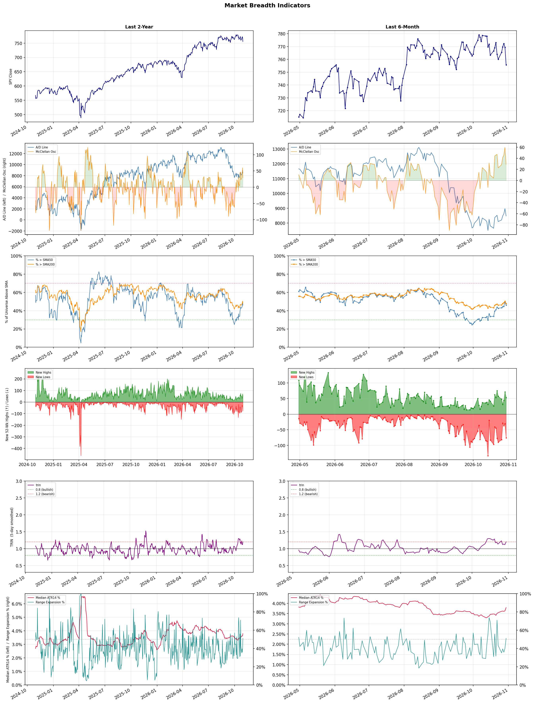

A daily market breadth and sector rotation report for active investors
| Item | Read |
|---|---|
| Regime | Neutral |
| Risk posture | Cautious |
| Universe | 1,316 stocks tracked · 53 new 52-week highs · 30 active swing setups |
| Breadth | only 46.0% of tracked stocks are above SMA50, new lows exceed new highs (76 vs 53) |
| Leadership | Oil & Gas E&P, REIT - Hotel & Motel, and Health Information Services |
| Weakest groups | Uranium, Other Industrial Metals & Mining, and Solar |
Use this report to prioritize research and chart review; validate entries, stops, liquidity, earnings, and risk before acting.
| Item | Read |
|---|---|
| Primary read | Neutral regime with Cautious risk posture. |
| Research queue | APA, RRC, COP, OVV, AR |
| Leadership focus | Oil & Gas E&P, REIT - Hotel & Motel, and Health Information Services |
| Caution list | Uranium, Other Industrial Metals & Mining, and Solar |
| Review prompt | Check extension risk, chart location, fundamentals, valuation, and earnings before using any research row. |
| Item | Read |
|---|---|
| Primary read | 3 active risk warnings; use screen output as watchlist input only. |
| Bullish screens | COP, AJG, MRSH, CVX, SHEL |
| Bearish screens | none |
| Alerts / levels | Automated trigger, stop, ATR, liquidity, reward/risk, and event-risk levels are pending future enrichment. |
| Review prompt | Open the linked chart, define trigger and invalidation, then check liquidity and event risk independently. |
Risk Posture: Cautious — screen backdrop is selective; prioritize research in top-ranked groups
Metric context: McClellan below -50 = elevated selling pressure; below -100 = washout territory. Range Expansion = share of stocks with daily range above their 20-day average. Signal Density = share of tracked names appearing in signal screens.
| Breadth Date | % > SMA50 | % > SMA200 | New Highs | New Lows | McClellan | Median Range | Avg Range | Median ATR14 | Range Expansion | Signal Density |
|---|---|---|---|---|---|---|---|---|---|---|
| 2026-10-30 | 46.0% | 47.9% | 53 | 76 | 29.1 | 3.5% | 4.2% | 3.8% | 51.1% | 6.6% |

Prior comparison date: October 29, 2026
| Metric | Prior | Current | Change |
|---|---|---|---|
| Regime | Neutral | Neutral | unchanged |
| Risk Posture | Cautious | Cautious | unchanged |
| % > SMA50 | 49.5% | 46.0% | -3.5 pts |
| % > SMA200 | 50.5% | 47.9% | -2.6 pts |
| New Highs | 71 | 53 | -18 |
| New Lows | 31 | 76 | -45 |
Top-10 industries entering: Drug Manufacturers - General and Insurance Brokers. Top-10 industries leaving: Apparel Retail and Diagnostics & Research. New multi-signal long setups: ABBV, AEE, AFL, AHR, AJG, BJ, CB, COP, CROX, CVX. New multi-signal short setups: none.
| Status | Tickers | Read |
|---|---|---|
| Added | ABBV, AEE, AFL, AHR, AJG, BJ, CB, COP | New technical screen matches vs prior report. |
| Removed | AER, BHC, BNS, COF, DD, DRH, EMR, EW | No longer present in today's technical screen matches. |
| Still Active | AMGN, GILD, KDP | Appeared in both current and prior reports. |
| Promoted | none | Model Screen Score improved by at least 15 points. |
| Downgraded | none | Model Screen Score declined by at least 15 points. |
| Direction | Industry | ETF | Prior Rank | Current Rank | Days | Rank Change |
|---|---|---|---|---|---|---|
| Rose | Restaurants | N/A | 84 | 16 | 35 | +68 |
| Rose | Footwear & Accessories | N/A | 85 | 19 | 42 | +66 |
| Rose | Apparel Manufacturing | N/A | 67 | 4 | 42 | +63 |
| Rose | REIT - Hotel & Motel | XLRE | 59 | 2 | 42 | +57 |
| Rose | Leisure | N/A | 83 | 26 | 42 | +57 |
Bull: The restaurant industry is experiencing a rising relative strength primarily due to steady growth and increasing consumer demand, as highlighted by Yahoo Finance's article on stocks to buy in this sector. Despite some short-term volatility in individual stocks like Chipotle and McDonald's, the overall positive sentiment is bolstered by strong performances from key players like Brinker and Yum China, which are leading the market and benefiting from a rebound in dining frequency, as noted by TradingView. Additionally, the potential for attractive yields in the sector, as mentioned by Barchart.com, further enhances the appeal of restaurant stocks, positioning them favorably for long-term investment.
Bear: While the restaurant industry may show rising relative strength and some positive headlines, underlying challenges such as declining dining frequency, inflationary pressures on food costs, and shifting consumer preferences towards home dining could undermine this growth. The recent dips in stocks like Chipotle and McDonald's suggest that even leading companies are struggling to maintain momentum, indicating that the sector may face significant headwinds that could lead to a broader downturn rather than sustained growth. Additionally, the allure of attractive yields may not be enough to offset the risks associated with a potentially weakening economic environment and changing consumer behavior.
Verdict: The restaurant industry's rising relative strength is primarily driven by increasing consumer demand and a rebound in dining frequency, supported by strong performances from leading companies like Brinker and Yum China. However, key risks include inflationary pressures on food costs and shifting consumer preferences towards home dining, which could undermine growth and lead to volatility in stock performance. Investors should monitor these economic indicators closely while considering potential entry points in the sector.
Sources: Google News
Bull: The Footwear & Accessories sector is experiencing a rise in relative strength primarily due to increasing consumer interest in outdoor and performance-oriented products, as highlighted by the "Best Outdoor Stocks Worth Watching" article, which suggests a growing market for outdoor footwear. Additionally, the focus on sustainability, as seen in the new EU regulations aimed at reducing waste from unsold clothing and shoes, is likely driving innovation and consumer preference towards brands that prioritize eco-friendly practices, enhancing the sector's appeal and competitive positioning.
Bear: While the rising relative strength in the Footwear & Accessories sector may seem promising, it is crucial to consider the potential headwinds from economic pressures such as inflation and changing consumer spending habits. The emphasis on sustainability, while important, could also lead to increased production costs and supply chain complexities that may not be fully absorbed by consumers, ultimately impacting profit margins. Furthermore, the new EU regulations could impose significant operational challenges for brands that struggle to adapt, potentially stifling innovation rather than enhancing it.
Verdict: The Footwear & Accessories sector is likely rising due to heightened consumer interest in outdoor and performance-oriented products, coupled with a growing demand for sustainable practices that align with new EU regulations. However, key risks include potential inflationary pressures and increased production costs, which may squeeze profit margins and challenge brands' ability to adapt to regulatory changes effectively. Investors should closely monitor consumer spending trends and operational responses to sustainability mandates as indicators of future performance.
Sources: Google News
Bull: The Apparel Manufacturing industry is experiencing a rise in relative strength due to a combination of strong consumer demand and positive industry trends highlighted in recent headlines. As noted in articles from Yahoo Finance and The Motley Fool, the sector is benefiting from a shift towards sustainable and innovative apparel, which is attracting investor interest and driving stock performance. Additionally, the focus on top-performing stocks, as seen in various lists of the best apparel and textile stocks, suggests that investors are increasingly confident in the industry's growth potential, positioning it favorably against other sectors.
Bear: While the apparel manufacturing industry may currently exhibit rising relative strength, this trend could be misleading due to short-term consumer enthusiasm rather than sustainable growth. The sector faces significant headwinds, including supply chain disruptions, rising raw material costs, and increasing competition from fast-fashion brands that prioritize affordability over sustainability. Additionally, the broader economic environment, characterized by potential recessionary pressures and changing consumer spending habits, may undermine the long-term viability of this growth narrative.
Verdict: The apparel manufacturing industry's rise is fundamentally driven by strong consumer demand for sustainable and innovative products, which has attracted investor interest and boosted stock performance. However, key risks include potential supply chain disruptions and rising raw material costs, alongside the threat of economic downturns that could shift consumer spending habits away from discretionary apparel purchases. Investors should closely monitor these factors to assess the sustainability of the industry's growth trajectory.
Sources: Google News
Bull: The REIT - Hotel & Motel sector is experiencing rising relative strength primarily due to a robust recovery in travel demand and increased occupancy rates, as highlighted by the recent news of hotel company stocks rising for the third consecutive month. This positive momentum is further supported by strong earnings reports from key players like Host Hotels & Resorts, which indicate improved financial performance and investor confidence in the sector's rebound. Additionally, the identification of top hospitality REITs for 2026 by The Motley Fool underscores a favorable long-term outlook driven by ongoing trends in travel and tourism.
Bear: While the recent rise in hotel REIT stocks may suggest a recovery, it is essential to consider that this rebound could be a temporary reaction to pent-up travel demand rather than a sustainable trend. Economic uncertainties, including potential recession risks, inflationary pressures, and rising interest rates, could dampen consumer spending on travel and hospitality, leading to decreased occupancy rates and profitability for these REITs in the coming quarters. Additionally, the long-term outlook may be clouded by evolving work-from-home trends and a shift in corporate travel policies, which could further impact demand for hotel accommodations.
Verdict: The REIT - Hotel & Motel sector's rising relative strength is primarily driven by a robust recovery in travel demand and increased occupancy rates, bolstered by strong earnings reports from major players like Host Hotels & Resorts. However, investors should remain cautious of potential risks, including economic uncertainties, inflation, and changing corporate travel policies, which could hinder sustained growth and profitability in the sector. Therefore, while the current momentum is promising, it's crucial to monitor these macroeconomic factors closely.
Sources: Google News
Bull: The leisure industry is experiencing rising relative strength primarily due to a resurgence in travel and tourism as consumer demand rebounds post-pandemic, as highlighted in the Yahoo Finance and Motley Fool articles discussing growth opportunities in leisure stocks. Additionally, the focus on leisure and recreation stocks, despite industry pressures, indicates a strong consumer inclination towards experiences over goods, supported by insights into Airbnb's performance versus traditional hospitality peers, suggesting a shift in consumer preferences that favors innovative leisure solutions. This combination of pent-up demand and evolving consumer behavior positions the leisure sector for sustained growth amid cyclical headwinds.
Bear: While the resurgence in travel and tourism may suggest a temporary boost for the leisure industry, significant cyclical headwinds remain that could undermine this growth. Rising inflation and interest rates are squeezing consumer discretionary spending, leading to a potential pullback in leisure activities as households prioritize essential expenses. Moreover, the ongoing geopolitical uncertainties and potential new COVID-19 variants could disrupt travel plans, dampening the optimistic outlook suggested by recent headlines.
Verdict: The leisure industry's rising strength is fundamentally driven by a robust rebound in travel and tourism as consumer demand shifts towards experiences, supported by strong performance in innovative leisure solutions like Airbnb. However, key risks include rising inflation and interest rates, which may constrain consumer discretionary spending and lead to a pullback in leisure activities, particularly if economic pressures intensify or geopolitical uncertainties disrupt travel plans. Investors should closely monitor these economic indicators and consumer sentiment to gauge the sustainability of growth in the sector.
Sources: Google News
| Direction | Industry | ETF | Prior Rank | Current Rank | Days | Rank Change |
|---|---|---|---|---|---|---|
| Fell | Semiconductor Equipment & Materials | SOXX | 3 | 81 | 28 | -78 |
| Fell | Electronic Components | XLK | 6 | 78 | 28 | -72 |
| Fell | Copper | COPX | 5 | 77 | 28 | -72 |
| Fell | Capital Markets | KCE | 9 | 79 | 42 | -70 |
| Fell | Computer Hardware | XLK | 5 | 74 | 35 | -69 |
Bear: While the recent rallies in stocks like Nvidia and AMD may suggest short-term optimism, they do not address the fundamental issues plaguing the semiconductor sector, such as the cyclical nature of demand and the risk of oversupply as new fabrication capacities come online. Furthermore, the claims of a memory shortage extending into 2030 by SK Hynix may be overly optimistic, as historical trends indicate that supply-demand imbalances can quickly shift, leading to price volatility and potential margin compression for equipment manufacturers like Lam Research and Applied Materials. This precarious balance raises significant concerns about the sustainability of current valuations in the semiconductor equipment and materials space.
Bull: The Semiconductor Equipment & Materials sector is experiencing a relative strength decline due to concerns over cyclical demand fluctuations and potential oversupply, as highlighted by the cautionary tone in articles like "Here’s What Scares Me About Semiconductor Stocks." Additionally, while major players like Nvidia and AMD are driving short-term gains, the broader industry sentiment is tempered by uncertainties about memory market dynamics, despite positive signals from SK Hynix regarding a memory shortage extending into 2030, as noted in the rally of chip equipment stocks. This juxtaposition of optimism in specific stocks against a backdrop of cautious macroeconomic signals is contributing to the sector's relative weakness.
Verdict: The semiconductor equipment and materials sector is experiencing a decline primarily due to cyclical demand fluctuations and concerns over potential oversupply, despite short-term gains from key players like Nvidia and AMD. The key risk lies in the possibility that optimistic forecasts, such as SK Hynix's memory shortage projection, may not hold true, leading to rapid shifts in supply-demand dynamics that could pressure margins and valuations for equipment manufacturers. Investors should remain cautious and consider the potential for volatility in the sector as new fabrication capacities come online.
Sources: Google News
Bear: While the bull analyst highlights competition and market saturation as key factors for the decline in relative strength, it's crucial to recognize that the electronic components sector is also facing significant headwinds from macroeconomic pressures, such as rising interest rates and supply chain disruptions. These factors can exacerbate the challenges of traditional firms, making it difficult for them to innovate or maintain margins in a rapidly evolving market. Moreover, the shift toward robotics and emerging technologies may not necessarily translate into immediate growth for electronic components, as these innovations often require substantial upfront investment and may not yield returns in the short term, further dampening investor sentiment.
Bull: The Electronic Components sector is experiencing a decline in relative strength primarily due to heightened competition and market saturation, as indicated by the recent earnings reviews and comparisons among peers like nLIGHT and Benchmark. Additionally, the focus on robotics and emerging technologies, as highlighted in the Motley Fool article, suggests that investor attention may be shifting toward more innovative and growth-oriented segments, leaving traditional electronic components firms under pressure. This shift can lead to a perception of stagnation within the sector, impacting investor sentiment and relative performance against other industries.
Verdict: The electronic components sector is likely experiencing a decline in relative strength due to intensified competition and market saturation, compounded by macroeconomic pressures such as rising interest rates and supply chain disruptions. This environment not only hampers traditional firms' ability to innovate but also raises the risk that investments in emerging technologies may not yield immediate returns, further diminishing investor confidence. Investors should remain cautious and closely monitor macroeconomic indicators and company performance to navigate this challenging landscape.
Sources: Google News
Bear: While the bull analyst attributes the recent decline in copper stocks to tariff uncertainty and a shift towards alternative investments, this perspective overlooks the fundamental challenges facing the copper industry. The falling relative strength trend indicates a broader bearish sentiment, driven by potential oversupply concerns and waning demand from key sectors, particularly construction and electric vehicles, as economic growth slows. Additionally, the increasing focus on sustainable and alternative materials may further diminish copper's long-term growth prospects, suggesting that the current sell-off may reflect deeper structural issues rather than just short-term market fluctuations.
Bull: The recent decline in the relative strength of copper stocks can be attributed to heightened uncertainty surrounding tariffs, as indicated by the headline "Copper Stocks Tumble as Tariff Doubt Reverses Record Rally." This uncertainty has led to significant sell-offs in major copper producers like Freeport-McMoRan and Teck Resources, contributing to a broader market pullback in the copper sector. Additionally, the focus on alternative investments, such as helium and AI-related stocks, as highlighted in the other headlines, suggests that investor sentiment may be shifting away from copper in the short term.
Verdict: The recent decline in copper stocks is primarily driven by fundamental challenges such as potential oversupply and decreasing demand from critical sectors like construction and electric vehicles, compounded by broader economic slowdowns. While tariff uncertainty has contributed to short-term volatility, the bear case highlights a key risk: the long-term shift towards sustainable materials could further erode copper's market position, indicating that investors should approach copper investments with caution and consider diversifying into sectors with stronger growth prospects.
Sources: Google News
Bear: While the bull analyst highlights rising interest rates as a primary factor for the Capital Markets sector's relative weakness, it’s important to consider that this sector has historically shown resilience in adapting to changing interest rate environments. Moreover, the cautious sentiment from Morgan Stanley regarding rising risks may indicate broader market instability, which could lead to increased volatility and uncertainty in trading activities, further exacerbating the sector's challenges. Additionally, the sectors identified by J.P. Morgan and Morningstar as primed for growth may be benefiting from short-term trends that do not reflect sustainable long-term performance, making the Capital Markets sector's current underperformance a potentially strategic opportunity rather than a definitive decline.
Bull: The Capital Markets sector is experiencing a decline in relative strength primarily due to rising interest rates, which can dampen trading volumes and reduce transaction activity, as highlighted in the U.S. Bank article discussing the impact of interest rates on the stock market. Additionally, the cautious sentiment reflected in Morgan Stanley's commentary on rising risks may be contributing to a more conservative investment approach, leading to underperformance compared to other sectors identified by J.P. Morgan and Morningstar as primed for growth. This combination of macroeconomic pressures and sector rotation is likely driving the relative weakness in Capital Markets.
Verdict: The Capital Markets sector's decline is primarily driven by rising interest rates, which dampen trading volumes and transaction activity, creating a challenging environment for growth. However, the key risk highlighted by the bear thesis is the potential for increased market volatility and uncertainty, which could further impact trading dynamics and investor sentiment. Investors should remain vigilant and consider this sector's historical resilience as a potential opportunity for strategic positioning amidst current challenges.
Sources: Google News
Bear: While the bull analyst points to a shift in investor sentiment towards emerging technologies, it's crucial to recognize that the current decline in the Computer Hardware sector is not merely a reallocation of capital but may also reflect fundamental weaknesses in the sector itself, including supply chain issues, rising production costs, and diminishing returns on investment in traditional chip technologies. Furthermore, the sell-off of AI hardware stocks could indicate that the market has reached a saturation point, leading to concerns over overvaluation and the sustainability of growth in a sector that has been heavily reliant on hype rather than solid financial performance. As hedge funds move away from chip stocks, it suggests a lack of confidence in the sector's ability to deliver consistent returns in the near future.
Bull: The Computer Hardware sector is experiencing a decline in relative strength primarily due to a shift in investor sentiment towards emerging technologies like quantum computing and alternative sectors, as highlighted in recent headlines from Morningstar and The Motley Fool. Additionally, the sell-off of AI hardware stocks, as noted by Business Insider and Reuters, indicates a broader market correction in response to overvaluation concerns and profit-taking, leading hedge funds to pivot away from chip stocks. This trend suggests that investors are reallocating capital towards sectors perceived to have higher growth potential, such as quantum computing and other tech innovations.
Verdict: The Computer Hardware sector's decline is primarily driven by fundamental weaknesses such as supply chain disruptions, rising production costs, and diminishing returns on traditional chip technologies, which have led to investor skepticism about future growth. The key risk highlighted by the bear case is the potential for market saturation and overvaluation, particularly in AI hardware, which could undermine confidence and hinder recovery in the sector. Investors should closely monitor these fundamental indicators and consider reallocating capital to sectors with more robust growth prospects.
Sources: Google News
| Industry | Rank | ETF | 7d | 14d | 28d | 42d | Chg 42d | Size | 20D | 60D | Composite | Active Setups |
|---|---|---|---|---|---|---|---|---|---|---|---|---|
| Oil & Gas E&P | 1 | XOP | 3 | 6 | 22 | 34 | +33 | 26 | 16.0% | 23.6% | 0.943 | 0 |
| REIT - Hotel & Motel | 2 | XLRE | 7 | 7 | 10 | 59 | +57 | 9 | 11.0% | 8.7% | 0.912 | 0 |
| Health Information Services | 3 | N/A | 6 | 10 | 4 | 4 | +1 | 12 | 10.6% | 42.5% | 0.909 | 1 |
| Apparel Manufacturing | 4 | N/A | 10 | 8 | 36 | 67 | +63 | 6 | 22.0% | 13.4% | 0.901 | 0 |
| Medical Care Facilities | 5 | IHF | 13 | 22 | 18 | 7 | +2 | 9 | 16.5% | 15.0% | 0.892 | 1 |
| Household & Personal Products | 6 | XLP | 4 | 3 | 24 | 27 | +21 | 12 | 12.3% | 10.8% | 0.891 | 0 |
| Insurance Brokers | 7 | N/A | 5 | 12 | 31 | 22 | +15 | 6 | 12.8% | 12.4% | 0.884 | 0 |
| Oil & Gas Integrated | 8 | XLE | 2 | 2 | 9 | 5 | -3 | 10 | 8.3% | 17.8% | 0.884 | 1 |
| Discount Stores | 9 | XRT | 8 | 4 | 15 | 20 | +11 | 7 | 10.6% | 8.1% | 0.877 | 0 |
| Drug Manufacturers - General | 10 | IHE | 20 | 23 | 26 | 21 | +11 | 14 | 10.7% | 9.7% | 0.873 | 0 |
Rank columns (7d–42d) show the industry's rank that many trading days ago — lower is stronger. Chg 42d = rank change vs 42 trading days ago — positive means the industry moved up. 20D and 60D are the mean stock return within the industry over that period. Active Setups: count of today's swing-trade candidates from this industry appearing across all signal screens.
| Industry | Rank | ETF | 7d | 14d | 28d | 42d | Chg 42d | Size | 20D | 60D | Composite | Active Setups |
|---|---|---|---|---|---|---|---|---|---|---|---|---|
| Uranium | 87 | URA | 87 | 87 | 84 | 79 | -8 | 6 | -16.0% | -28.3% | 0.033 | 0 |
| Other Industrial Metals & Mining | 86 | N/A | 85 | 80 | 76 | 54 | -32 | 21 | -20.1% | -28.2% | 0.043 | 0 |
| Solar | 85 | TAN | 75 | 81 | 74 | 82 | -3 | 8 | -11.5% | -25.8% | 0.085 | 0 |
| Electrical Equipment & Parts | 84 | XLI | 86 | 86 | 37 | 49 | -35 | 12 | -19.2% | -29.0% | 0.088 | 0 |
| Aerospace & Defense | 83 | ITA | 82 | 83 | 58 | 75 | -8 | 26 | -13.6% | -26.9% | 0.111 | 0 |
| Auto Parts | 82 | N/A | 78 | 68 | 52 | 46 | -36 | 19 | -13.2% | -20.4% | 0.122 | 0 |
| Semiconductor Equipment & Materials | 81 | SOXX | 77 | 78 | 3 | 57 | -24 | 17 | -28.2% | -21.3% | 0.137 | 1 |
| REIT - Mortgage | 80 | N/A | 79 | 84 | 85 | 69 | -11 | 11 | -6.4% | -21.4% | 0.137 | 0 |
| Capital Markets | 79 | KCE | 74 | 73 | 32 | 9 | -70 | 31 | -16.8% | -13.2% | 0.139 | 0 |
| Electronic Components | 78 | XLK | 81 | 72 | 6 | 39 | -39 | 10 | -22.2% | -18.6% | 0.142 | 0 |
Rank columns (7d–42d) show the industry's rank that many trading days ago — lower is stronger. Chg 42d = rank change vs 42 trading days ago — positive means the industry moved up. 20D and 60D are the mean stock return within the industry over that period. Active Setups: count of today's swing-trade candidates from this industry appearing across all signal screens.
These are research candidates from top-ranked stocks, capped at five names per industry to avoid over-concentration. Returns shown (60D, 120D, 250D) are historical — they reflect where prices have already moved, not forward expectations. Extension Risk flags names that may require extra patience or a better entry point. They are not buy signals.
Chart: TV = TradingView chart (opens in browser); PDF = local chart file (if downloaded).
| Ticker | Name | Industry | Industry Rank | Market Cap | 60D Hist | 120D Hist | 250D Hist | Extension Risk | Research Reason | Chart |
|---|---|---|---|---|---|---|---|---|---|---|
| APA | Apache | Oil & Gas E&P | 1 | N/A | 45.3% | 45.7% | 139.9% | Constructive | Top-ranked in industry | TV |
| RRC | Range Resources | Oil & Gas E&P | 1 | N/A | 42.0% | 34.0% | 55.2% | Constructive | Top-ranked in industry | TV |
| COP | ConocoPhillips | Oil & Gas E&P | 1 | N/A | 32.8% | 34.2% | 78.8% | Constructive | Top-ranked in industry | TV |
| OVV | Ovintiv | Oil & Gas E&P | 1 | N/A | 21.9% | 24.1% | 98.1% | Constructive | Top-ranked in industry | TV |
| AR | Antero Resources | Oil & Gas E&P | 1 | N/A | 20.6% | 15.0% | 36.1% | Constructive | Top-ranked in industry | TV |
| APLE | Apple Hospitality REIT Inc | REIT - Hotel & Motel | 2 | N/A | 17.0% | 37.7% | 76.5% | Constructive | Top-ranked in industry | TV |
| PEB | Pebblebrook Hotel Trust | REIT - Hotel & Motel | 2 | N/A | 16.8% | 50.1% | 106.5% | Constructive | Top-ranked in industry | TV |
| DRH | DIAMONDROCK HOSPITALITY CO | REIT - Hotel & Motel | 2 | N/A | 13.7% | 36.6% | 89.5% | Constructive | Top-ranked in industry | TV |
| INN | Summit Hotel Properties Inc | REIT - Hotel & Motel | 2 | N/A | 8.0% | 35.6% | 47.2% | Constructive | Top-ranked in industry | TV |
| RLJ | RLJ Lodging Trust | REIT - Hotel & Motel | 2 | N/A | 7.2% | 47.1% | 98.1% | Constructive | Top-ranked in industry | TV |
| HTFL | Heartflow | Health Information Services | 3 | N/A | 117.2% | 100.9% | 58.9% | Very extended | Top-ranked in industry; very extended | TV |
| DOCS | Doximity | Health Information Services | 3 | N/A | 58.6% | 24.8% | -50.4% | Extended | Top-ranked in industry; extended | TV |
| HNGE | Hinge Health | Health Information Services | 3 | N/A | 42.8% | 108.8% | 129.7% | Extended | Top-ranked in industry; extended | TV |
| CERT | Certara | Health Information Services | 3 | N/A | 33.9% | 112.2% | -6.4% | Extended | Top-ranked in industry; extended | TV |
| TDOC | Teladoc Health | Health Information Services | 3 | N/A | 27.4% | 23.0% | -1.4% | Constructive | Top-ranked in industry | TV |
| FIGS | FIGS Inc | Apparel Manufacturing | 4 | N/A | 89.6% | 78.5% | 185.7% | Extended | Top-ranked in industry; extended | TV |
| VFC | VF Corp | Apparel Manufacturing | 4 | N/A | 24.9% | 3.3% | 33.3% | Constructive | Top-ranked in industry | TV |
| PVH | PVH Corp | Apparel Manufacturing | 4 | N/A | 4.3% | 8.4% | 15.4% | Constructive | Top-ranked in industry | TV |
| LEVI | Levi Strauss & Co. | Apparel Manufacturing | 4 | N/A | -6.7% | 4.5% | 14.0% | Lagging | Top-ranked in industry; lagging | TV |
| ZGN | Ermenegildo Zegna NV | Apparel Manufacturing | 4 | N/A | -8.9% | 9.0% | 33.5% | Lagging | Top-ranked in industry; lagging | TV |
These are technical screen matches from existing signal files. They are not trade recommendations. Trigger, stop, ATR, liquidity, reward/risk, and event risk still require separate validation until those inputs are available.
Model Screen Score is weighted by signal count, industry rank, freshness, and setup type. It is not a probability of profit, expected return, or suitability rating. Industry cap: max 3 candidates per industry.
Signal glossary: Momentum Pullback = stock in an uptrend that has pulled back 10–30% and shows re-entry conditions. MA Compression = short- and long-term moving averages converging, often preceding a directional move. Three-Day Up/Down = three consecutive closes in the same direction. New 52Wk High/Low = price reached a new annual extreme.
Chart: TV = TradingView chart (opens in browser); PDF = local chart file (if downloaded).
| Ticker | Industry | Setups | Close | Industry Rank | Signal Count | Model Screen Score | Reason | Chart |
|---|---|---|---|---|---|---|---|---|
| COP | Oil & Gas E&P | New 52Wk High; Three-Day Up | 154.04 | 1 | 2 | 100 | Multi-signal; top industry breakout | TV |
| AJG | Insurance Brokers | New 52Wk High; Three-Day Up | 276.07 | 7 | 2 | 93 | Multi-signal; top industry breakout | TV |
| MRSH | Insurance Brokers | New 52Wk High; Three-Day Up | 200.62 | 7 | 2 | 93 | Multi-signal; top industry breakout | TV |
| CVX | Oil & Gas Integrated | New 52Wk High; Three-Day Up | 235.60 | 8 | 2 | 85 | Multi-signal; top industry breakout | TV |
| SHEL | Oil & Gas Integrated | New 52Wk High; Three-Day Up | 108.69 | 8 | 2 | 85 | Multi-signal; top industry breakout | TV |
| XOM | Oil & Gas Integrated | New 52Wk High; Three-Day Up | 187.25 | 8 | 2 | 85 | Multi-signal; top industry breakout | TV |
| BJ | Discount Stores | New 52Wk High; Three-Day Up | 107.32 | 9 | 2 | 85 | Multi-signal; top industry breakout | TV |
| ABBV | Drug Manufacturers - General | New 52Wk High; Three-Day Up | 294.89 | 10 | 2 | 85 | Multi-signal; top industry breakout | TV |
| AMGN | Drug Manufacturers - General | New 52Wk High; Three-Day Up | 466.01 | 10 | 2 | 85 | Multi-signal; top industry breakout | TV |
| GILD | Drug Manufacturers - General | New 52Wk High; Three-Day Up | 170.68 | 10 | 2 | 85 | Multi-signal; top industry breakout | TV |
| KDP | Beverages - Non-Alcoholic | New 52Wk High; Three-Day Up | 35.84 | 12 | 2 | 85 | Multi-signal; new-high strength | TV |
| LNG | Oil & Gas Midstream | New 52Wk High; Three-Day Up | 330.32 | 14 | 2 | 85 | Multi-signal; new-high strength | TV |
| CB | Insurance - Property & Casualty | New 52Wk High; Three-Day Up | 364.28 | 17 | 2 | 77 | Multi-signal; new-high strength | TV |
| CROX | Footwear & Accessories | New 52Wk High; Three-Day Up | 150.35 | 19 | 2 | 77 | Multi-signal; new-high strength | TV |
| TEVA | Drug Manufacturers - Specialty & Generic | New 52Wk High; Three-Day Up | 42.09 | 21 | 2 | 77 | Multi-signal; new-high strength | TV |
| ED | Utilities - Regulated Electric | New 52Wk High; Three-Day Up | 116.64 | 22 | 2 | 77 | Multi-signal; new-high strength | TV |
| AEE | Utilities - Regulated Electric | MA Compression; Three-Day Up | 110.54 | 22 | 2 | 72 | Multi-signal; compression setup | TV |
| DUK | Utilities - Regulated Electric | MA Compression; Three-Day Up | 127.39 | 22 | 2 | 72 | Multi-signal; compression setup | TV |
| GPN | Specialty Business Services | New 52Wk High; Three-Day Up | 96.84 | 27 | 2 | 70 | Multi-signal; new-high strength | TV |
| TREX | Building Products & Equipment | New 52Wk High; Three-Day Up | 51.14 | 32 | 2 | 70 | Multi-signal; new-high strength | TV |
| KIM | REIT - Retail | MA Compression; Three-Day Up | 24.52 | 37 | 2 | 65 | Multi-signal; compression setup | TV |
| AFL | Insurance - Life | MA Compression; Three-Day Up | 123.89 | 38 | 2 | 65 | Multi-signal; compression setup | TV |
| SHW | Specialty Chemicals | MA Compression; Three-Day Up | 332.61 | 40 | 2 | 65 | Multi-signal; compression setup | TV |
| FLYW | Software - Infrastructure | New 52Wk High; Three-Day Up | 19.69 | 43 | 2 | 65 | Multi-signal; new-high strength | TV |
| REPL | Biotechnology | New 52Wk High; Three-Day Up | 17.61 | 48 | 2 | 65 | Multi-signal; new-high strength | TV |
| RPRX | Biotechnology | New 52Wk High; Three-Day Up | 67.18 | 48 | 2 | 65 | Multi-signal; new-high strength | TV |
| TGTX | Biotechnology | New 52Wk High; Three-Day Up | 61.18 | 48 | 2 | 65 | Multi-signal; new-high strength | TV |
| MA | Credit Services | New 52Wk High; Three-Day Up | 638.01 | 55 | 2 | 65 | Multi-signal; new-high strength | TV |
| OMC | Advertising Agencies | MA Compression; Three-Day Up | 81.26 | 50 | 2 | 60 | Multi-signal; compression setup | TV |
| AHR | REIT - Healthcare Facilities | MA Compression; Three-Day Up | 53.52 | 52 | 2 | 60 | Multi-signal; compression setup | TV |
How To Use This Report
| Use | Purpose |
|---|---|
| Market map | Start with breadth, regime, risk warnings, and what changed since the prior report. |
| Industry scan | Use leading, deteriorating, rising, and declining industries to focus research. |
| Research queue | Treat long-term candidates as names for deeper fundamental, valuation, and chart review. |
| Technical review | Treat bullish and bearish screen matches as watchlist inputs that require independent trigger, stop, liquidity, and event-risk checks. |
| Source follow-up | Use chart links and source files to verify raw inputs before relying on any row. |
What This Report Is Not
| Not | Meaning |
|---|---|
| Investment advice | The report does not evaluate personal objectives, risk tolerance, tax situation, account type, or suitability. |
| Buy/sell recommendation | Named tickers are research candidates or screen matches, not recommendations to transact. |
| Price target | The report does not provide fair value estimates, targets, or expected returns. |
| Trade plan | Trigger, stop, sizing, reward/risk, liquidity, and event-risk review remain separate user work. |
| Performance claim | Model Screen Score is not validated historical performance or a forecast of future results. |
| Item | Note |
|---|---|
| Version | Daily Report Methodology v1 |
| Model Screen Score | Screen-fit rank based on signal count, industry rank, freshness, and setup type. |
| Not predictive proof | The score is not expected return, probability of profit, historical validation, or suitability analysis. |
| Industry ranks | Composite industry ranks use existing daily ranking outputs and historical rank columns when available. |
| Research candidates | Long-term rows are research candidates from ranked stocks and leading industries, with historical returns labeled as historical only. |
| Technical matches | Bullish and bearish rows are screen matches requiring independent chart, trigger, stop, liquidity, and event-risk review. |
| Source | Status | Rows | Path |
|---|---|---|---|
| Market breadth | present | 1255 | breadth_20261030.csv |
| Industry composite rankings | present | 87 | all_industry_composite_20261030.csv |
| Top ranked stocks | present | 111 | top_ranked_composite_20261030.csv |
| All ranked stocks | present | 1316 | all_stocks_composite_sorted_20261030.csv |
| Top momentum pullbacks | present | 1468 | top_momentum_pullbacks_20261030.csv |
| MA compression | present | 1468 | ma_compression_stocks_20261030.csv |
| Three-day up/down | present | 390 | three_day_up_down_stocks_20261030.csv |
| New 52-week members | present | 129 | breadth_new_52wk_members_20261030.csv |
This report is generated from automated technical screens and is for informational and research purposes only. It is not investment advice, a solicitation, or a recommendation to buy or sell any security. Past performance is not indicative of future results. You are solely responsible for your own investment decisions. Consult a licensed financial advisor before acting on any information herein.